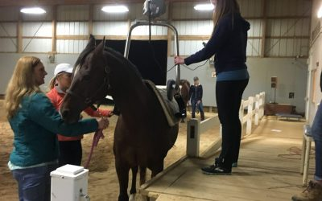
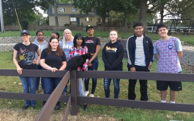
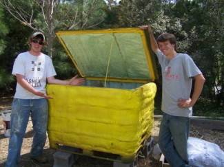
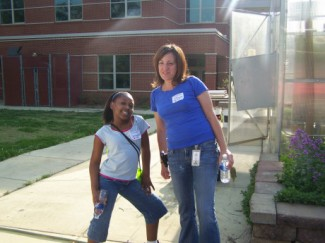
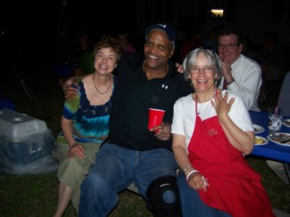
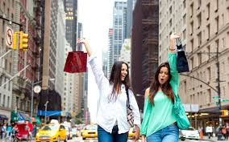
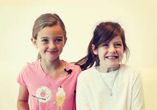

growing up together Emma and I had a LOT of hobbies including: horse back riding, gymnastics, basketball (yes really), writing children's books, knitting, line dancing, cooking, reading, acting, painting, drawing, singing, dying our hair (every color!), collecting vintage, cheerleading, photography, running, scrapbooking, wood working, beer making, sewing, baking, collecting and everything in between. It's fun to stay busy with stuff that makes you happy. Hobbies come and go over the years. I love the idea of always having a "current obsession".


Volunteering at Farm to Face
te to a hobby. We are all busy, especially during certain seasons of life. So be honest with yourself about what kind of time you have to devote to a hobby and don't over-commit or try something that you just realistically can't accomplish. A hobby is something you should do for you and should make you feel good about yourself, not constantly sad that you aren't achieving as much as you think you should or are unable to really enjoy it.



ends and see what they are doing. Maybe you can join them? Or maybe they will give you an idea for a project you might like to try. And if possible, try things out before you commit (financially or otherwise). For example, if you're thinking you might like to try rock climbing, go with a friend and use their equipment before you dive in and commit to joining a gym or buying supplies. Use your mom's sewing machine and see if you like sewing before you buy your own. This may seem like a no-brainer, but I've definitely been guilty of making those impulse buys only to watch it later coll

Literally, look around your home and see if there are any neglected hobbies that you started but haven't completed. Last week our brother reminded Emma how she had been writing a children's book (this was four or five years ago), and she had totally forgotten about it! She never finished that project, and now she's thinking she might pick it
